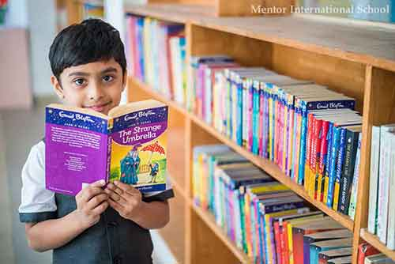

Mentor International School
Our premier standardized library is enriched with new ideas & motivates the future generation to gain knowledge, skills and attributes needed for creative learning.
Pillars of Mentor school

Achievments
We Are One of the Best CBSE Schools
Mentor International School is one of the best CBSE Schools in Pune is also intended to teach students the importance of responsibility, hard work and citizenship. This will instill character in students and reinforce positive behavior. Our top notch academic studies help out in developing Liberty, Fraternity and Equality in the minds of students. The educational material and teaching methodology of CBSE board is conducive to the national interests of the country. We offer CBSE curriculum which is more student-friendly & very conducive to a positive environment. Referring to best CBSE schools in Pune we prepare our students to pursue future studies from a centralized institution like an IIT or AIIMS. Most modern academic take standards norms to adopt a group of-learning strategy to education. This seems to be a dated approach to learning that continues to hamper our attempts to innovate. The fluency of our world class curriculum match the fluidity of relevant modern knowledge demands.